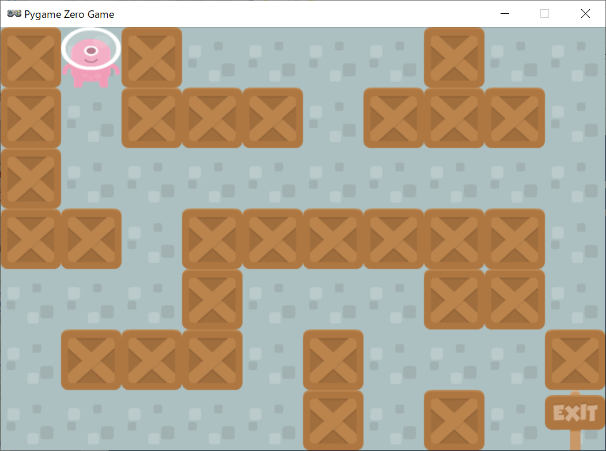
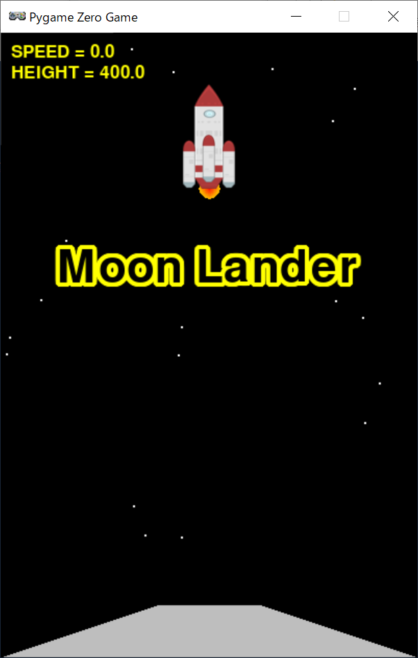
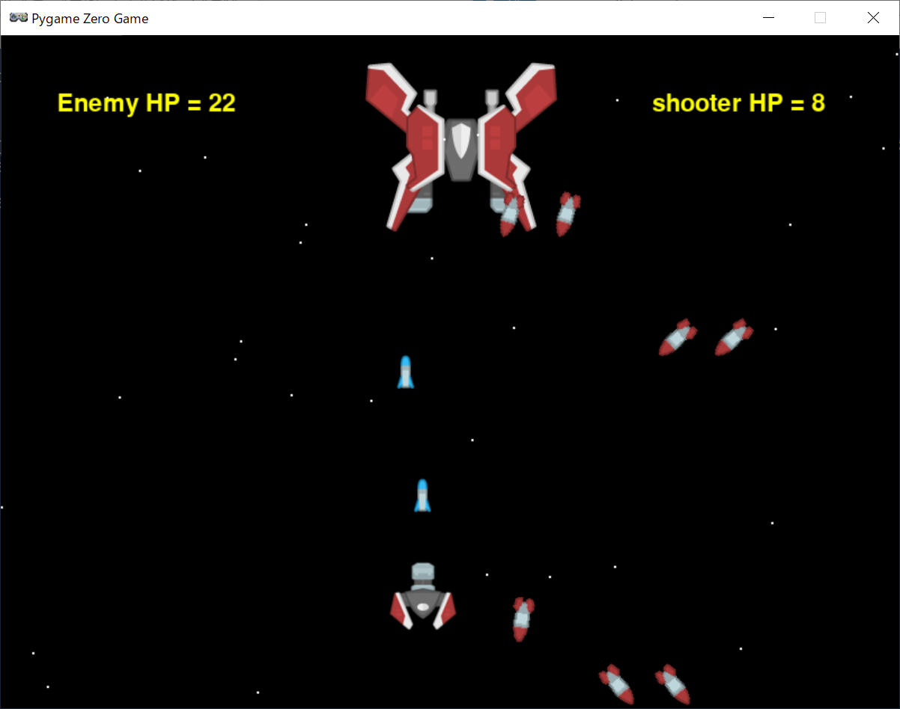

Games
 

ソースのダウンロード
作品プロフィール
使用言語：
Python
概要：
日経ソフトウェア 2020年5月号の付録で紹介されていた記事を基に作成しました。
加速度の設定や衝突判定、ミサイルの発射角度の計算など面白いと感じました。
resize()で画像が簡単に加工できたのも初心者の私には感動ものでした。
Moon LanderにSPEEDとHEIGHTメーターを追加しました。いずれタコメーターにしてみたいです。
迷路：
箱を避けて上下左右に動きます。
月面着陸：
スペースキーを押すとスタートです。
月の重力に引かれてロケットが下降してくるので、「↑」キーで速度を調整します。
着陸の瞬間に速度が1.0以下になるよう速度を合わせます。
シューティング：
スペースキーを押すとスタートです。
「←」「→」キーで敵のミサイルを避けながら自分のミサイルを当てます。
ミサイルは何かキーを押せば発射されます。
敵のHPを0にしたらクリアです。
戻る